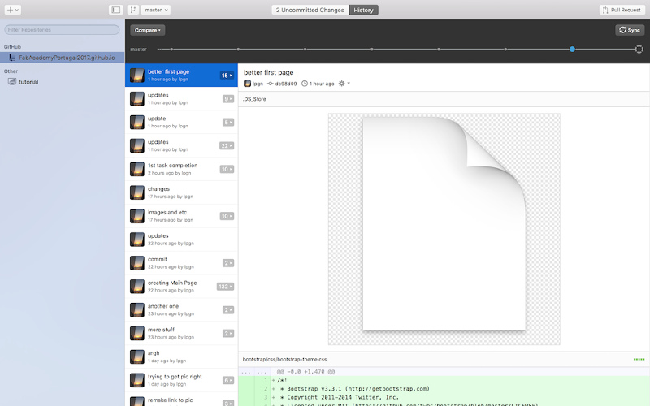
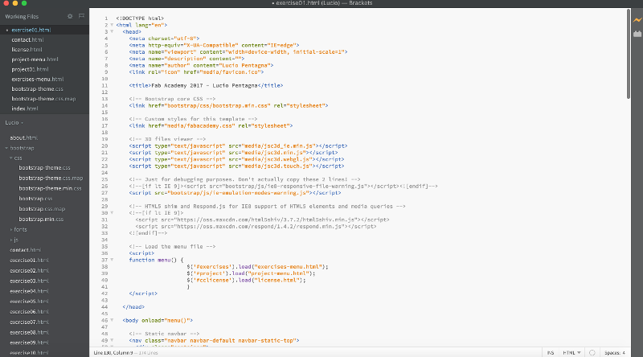
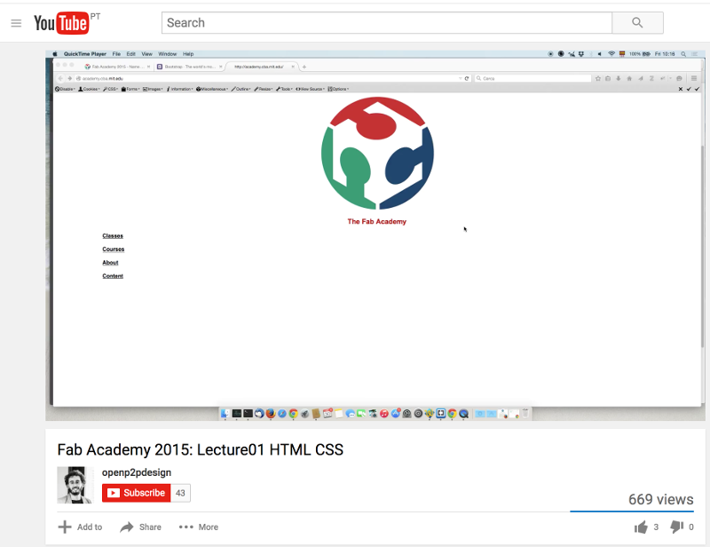
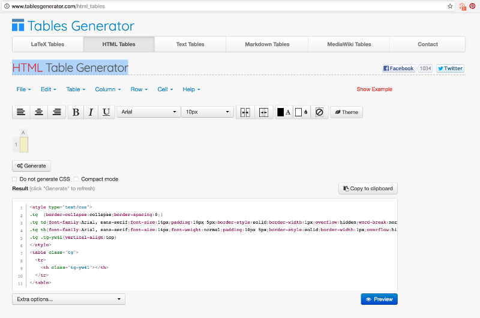

Assignment: Work through a git tutorial build a personal site in the class archive describing you and your final project.
installing git
First I am using MacOS. With that in mind and with many possible terminal applications to be installed its useful to have Brew it helps with all instalations one need to do on Terminal and desktop.
to install open terminal and run:
$ /usr/bin/ruby -e "$(curl -fsSL https://raw.githubusercontent.com/Homebrew/install/master/install)"
next install Cask it helps installing desktop app
$ brew tap caskroom/cask
next install Github desktop that will include Git as well
$ brew cask install github

Creating a Github Website Repository
I have created a repository on Github for the Portuguese group of Fab Academy students and for myself that way we can test our commits before committing to the main Fab Academy page.
To do that I followed the tutorial for Github Pages
Website
Research
To get an idea of what my site would look like I went to the 2016 Fab Academy Student Archives in order to have a look of what others have done and used the random student button.

After review of a few pages I found Yuji OKI's page wich led me to the Fab Academy Template by Massimo Menichinelli


Instaling template
Following the choice of template I copied the repository for the template to my hard drive. Then copied its contents to a directory with my name under the repository I created and cloned earlier.
Editing
The editor of choice I am using is a mix of Sublime-text and Brackets. To install it I simply run the following terminal comands:
$ brew cask install sublime-text
$ brew cask install brackets

In order to better understand HTML I watched Massimo's lecture on HTML and CSS

Also used html references at w3schools.com

To generate tables I have used the HTML Table Generator
